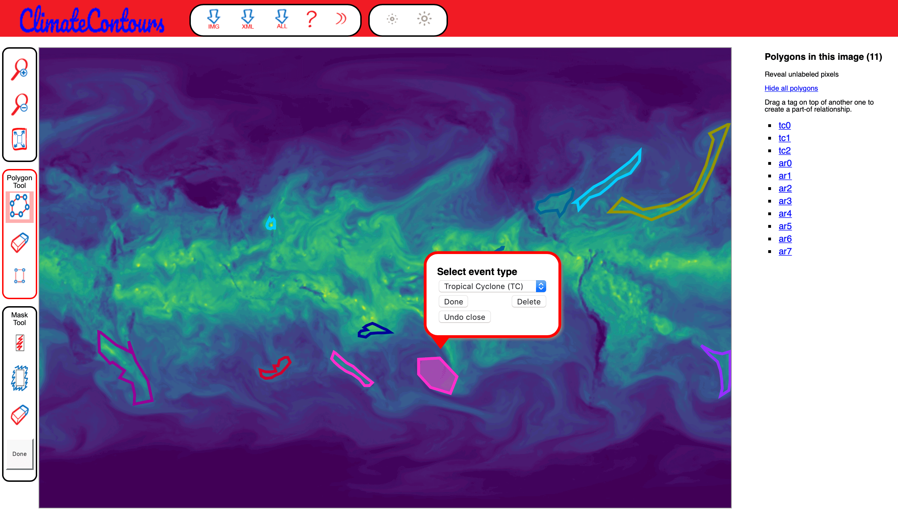
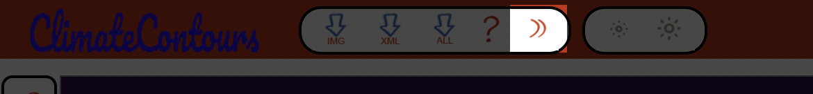
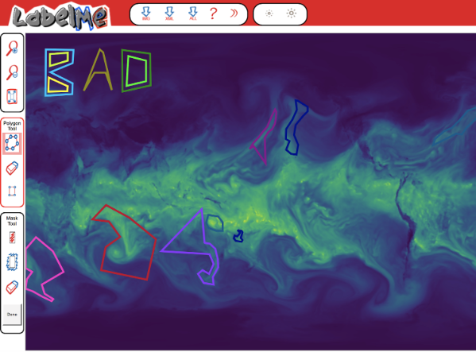
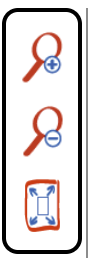

|
The image you labeled will be automatically saved.
Click next icon to label the next image:

Examples
Good example:

|
Bad example:

|
View the entire image
Make sure that your browser occupies the entire screen and that you scroll to see the entire image. If you label an object on the edge of your browser, make sure to scroll so that the entire object is visible.

|
Follow the object outline
Click on top of the object boundary so that the polygon accurately delineates the object outline. The ideal outline should be good enough for somebody to recognize the object just by seeing the drawn polygon.
Labeling occluded objects
Sometimes objects will be only partially visible. This is especially true for atmospheric rivers. We recommend in these cases to complete the boundary as if they were not occluded.
Labeling small events
Sometimes events like TCs will be small and difficult to label accurately without zooming in. Zoom in on the image with buttons in the uppermost block to the left of the image.
Delete segments
Before closing a polygon, you can delete the entire polygon. If you accidentally close a polygon and intend to add more points, press the "Undo Close" button. Once the polygon is closed, you can not delete control points or add new segments, but you can modify the location of the control points.
Modify control points
Once you have finished a polygon, you can modify individual control points. If you click the edge of a polygon, a pop-up menu will appear. You can press "Adjust Polygon" and click on a control point (hold the left mouse button down) and move it to a new position. Then click anywhere in the image to deselect the polygon. This will also save the modified polygon.
Delete entire polygon
Select the polygon. You will have the option to delete the polygon.
Can we have some other plots?
We are working on it:

How do I save/submit my labels?
The images are automatically saved every time you make a change to a polygon.
Acknowledgements
The tool is based on the open-source LabelMe project released by MIT.
Goal
The current goal is to label Atmospheric Rivers (ARs) and Tropical Cyclones (TCs) on simulated climate output from the 25km CAM5.1 climate model. As a first step, users will work with images of the integrated water vapor field and use the tool to draw n-sided polygons around events of interest and indicate the type of event (TC or AR) for each polygon. The number 'n' is the user's choice, depending on how complex the shape of the event is and how precise the user wishes the boundary to be. We recommend O(10) points for each event.
Where do images come from?
When you enter the tool, an image from the database will be randomly selected and shown. You help create ground truth labels by drawing polygons around and annotating as many atmospheric rivers and tropical cyclones as possible. (PS: We currently don't support uploading h5/netCDF files from users or other resources.)
Pre-existing Labels
Note that images may contain previously labeled events, which are meant to offer you with examples to get started. Please modify pre-existing labels or delete and replace them as you deem fit to accurately indicate the events present in the image.
| |